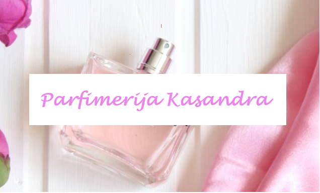
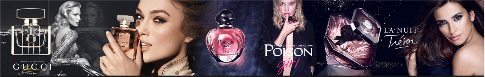

Parfimerija KASANDRA je 100 odsto domaće preduzeće. Verne tradiciji, dugoj 64 godine,
sve generacije kupuju u Kasandra parfimerijama - od onih koji se vezuju za klasične,
oprobane proizvode do onih koji žele najnovije,
inovativne preparate.Poverenje stvarano decenijama rezultira starim i novim kupcima.
Sa prodajnim lancem od 31 prodavnice ( 18 u Beogradu, 13 u gradovima Srbije ),
na najelitnijim, urbanim lokacijama, sa prepoznatljivim eksterijerom i enterijerom,
Kasandra parfimerije su svima dostupne a svaki proizvod je kupcu, i bukvalno,
na dohvat ruke.
Pored poznatih, priznatih i prestižnih brendova u Kasandra parfimerijama zastupljeni su
i najkvalitetniji, sofisticirani brendovi pa je kupovina u inostrantvu postala prošlost.
Kupcima Kasandre su neki od tih brendova sinonim za Kasandru.
Stručno obučeno, kompetentno, ljubazno i prefinjeno uslužno osoblje posluje u savremenom,
kreativnom ambijentu u kome se kupac oseća dobrodošlo i opušteno, kao kod kuće.
To je razlog što od kupaca, godinama, Kasandra dobija samo najviše ocene.
Stalne akcije, sniženja cena i poklona uz kupovinu, promocije uz asistenciju obučenih
promotera i konsultanata, specijalne mogućnosti tokom Happy Day, uslovi plaćanja uskladjeni
sa mogućnostima kupaca....odlika su Kasandra parfimerija.
Stalno otvorena veza sa potrošačem - putem visokokvalitetnog besplatnog časopisa, sajta,
facebook-a, instagram-a , oglašavanja u najtiražnijm medijma, telefonskog i SMS
komuniciranja zaslužna je za odlično obaveštenog kupca koji je veran i zadovoljan.

